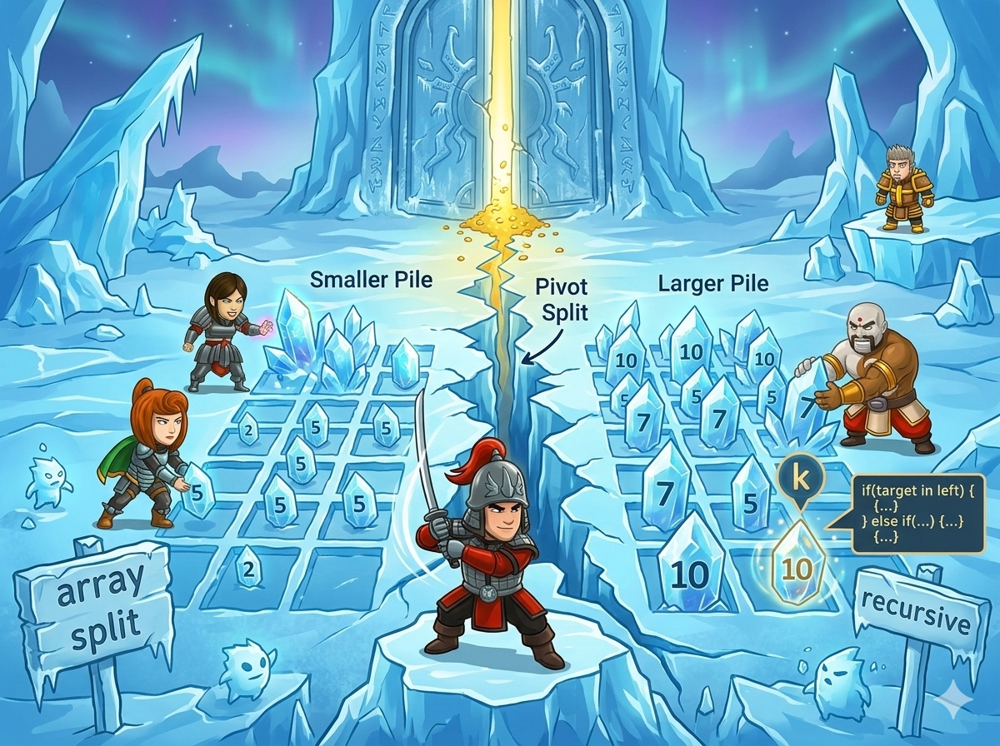

冰灵把 n 颗数字冰晶撒在雪地上。你的任务是找出这些数字中第 k 小的那一颗。

⚠️ 冰灵的特别提醒： 这里的排名是从 0 开始数的哦！最小的那颗叫“第 0 小”，第二小的叫“第 1 小”... 找对数字，冰封的秘门就会为你开启！🗝️
既然我们要找“第 k 小”的数字，最简单、最直接的方法是什么呢？当然是直接把所有冰晶从小到大排好队啦！
我们不需要自己动手去排，电脑里住着一位超级厉害的“排序精灵”。只要我们念动一句短短的咒语，精灵就会瞬间把几百万颗冰晶排得整整齐齐！✨
sort，Python是 .sort()）。<algorithm>： C++ 把很多超级魔法都装在这个箱子里，想要用排序精灵，一定要在最前面 #include 它哦！sort()： 用法很简单，sort(a.begin(), a.end()) 就能把 vector 里的数字从头到尾全部从小到大排好！#include <iostream> #include <vector> #include <algorithm> // 📦 魔法工具箱，排序精灵(sort)就住在这里面！ using namespace std; int main() { // ⚡ 念动加速咒语，读入几百万个数字也只要一眨眼！ ios::sync_with_stdio(false); cin.tie(nullptr); int n, k; cin >> n >> k; // 🖥️ 电脑问：有多少颗冰晶？你要找第几小？ // 🎒 准备一个能装下 n 颗冰晶的大口袋 vector<int> a(n); for (int i = 0; i < n; ++i) { cin >> a[i]; // 把冰晶一颗颗装进去 } // 🪄 召唤排序精灵！把口袋 a 里的东西，从头(begin)到尾(end)排好队！ sort(a.begin(), a.end()); // 🎉 见证奇迹的时刻：排好队后，第 k 小的数字，刚好就在 a[k] 的位置！ cout << a[k] << '\n'; return 0; // 任务圆满完成！ }
a[k]？ 因为计算机的数组/列表编号刚好是从 0 开始数的！题目说的“第 0 小”、“第 1 小”，跟数组的“0 号格子”、“1 号格子”完美对应！O(n log n)。对于这道题的 5,000,000 个数字，C++ 几秒钟就能排完，Python 也能勉强应对。虽然世界上还有只找不排的魔法（比如上一版的快速选择），但“一键排序”绝对是代码最短、最不容易写错的通关绝招！